country_name <- "Singapore"Pengantar R, Pengolahan Data, dan Visualisasi
Selamat Datang!
Pendahuluan
Workshop ini dirancang sebagai sesi live-coding.
- Ikuti praktik secara bertahap sambil mencoba kode sendiri
- Jangan takut bereksperimen dan membuat error kecil
- Target: membangun fondasi dan kepercayaan diri untuk belajar R secara mandiri
Garis Besar Workshop
Workshop ini mengikuti alur kerja data science:

Gambar dari R for Data Science (2e)
Garis Besar Seri Workshop
- Impor data ke R dari file atau sumber lain
- Rapikan (tidy) data — setiap kolom = variabel, setiap baris = observasi
- Transformasi: filter, membuat variabel baru, menghitung ringkasan
- Visualisasi dan pemodelan untuk memahami pola
- Komunikasikan hasil agar temuan dapat dipahami orang lain
Rencana Hari Ini
Bagian 1: Dasar-Dasar R
- Objek, tipe data, vektor, faktor, dataframe
Bagian 2: Pengolahan Data dengan Tidyverse
- Import, filter, select, mutate, summarize
Bagian 3: Visualisasi dan Statistik Deskriptif
- ggplot2, histogram, boxplot, scatter plot, korelasi
Apa itu R? Apa itu RStudio?
R: Bahasa pemrograman open-source untuk analisis statistik dan visualisasi.
RStudio: IDE yang memudahkan interaksi dengan R — menulis kode, menavigasi file, memeriksa variabel, dan memvisualisasikan plot.
. . .
- Instal keduanya: R terlebih dahulu, baru RStudio
- Kunjungi https://posit.co/download/rstudio-desktop
Tur RStudio
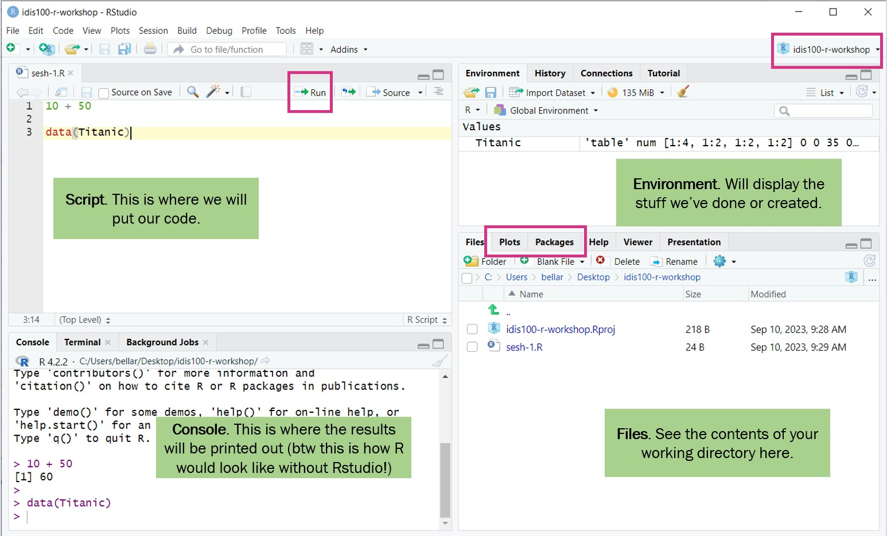
Sebelum Coding
- Working directory: Gunakan R Project untuk mengorganisir file
- Buat proyek:
File>New Project>New Directory - Buat folder:
data,data-output,fig-output
. . .
Tip
Jangan taruh proyek di folder OneDrive. Hindari spasi dan karakter khusus pada nama folder/file.
Mari Mulai Coding!
Buat skrip R baru — File > New File > R script.
Shortcut: Ctrl + Enter (Windows) / Cmd + Return (Mac) untuk mengeksekusi baris kode.
Penyegaran: Tipe Data Kuantitatif
- Nominal/Kategorikal: Data non-urut (contoh: kebangsaan)
- Ordinal: Data berurutan (contoh: peringkat)
- Diskrit: Bilangan bulat (contoh: ukuran sepatu)
- Biner: Dua kemungkinan (contoh: ya/tidak)
. . .
- Interval: Tidak ada “nol sejati” (contoh: suhu Celsius)
- Rasio: Ada “nol sejati” (contoh: pendapatan)
Objek dan Nilai di R
"Singapore"adalah sebuah nilai (value)country_nameadalah objek tempat menyimpan nilai<-adalah operator penugasan. Shortcut:Alt+-
. . .
Aturan penamaan: tidak boleh dimulai angka, case-sensitive, tidak boleh ada spasi.
Tipe Data di R
country_code <- "SGP" # character
life_satisfaction <- 8.5 # numeric (double)
is_religious <- TRUE # logical (boolean)
birth_year <- 1990L # integertypeof(country_code)[1] "character"typeof(life_satisfaction)[1] "double"typeof(is_religious)[1] "logical"Operasi Aritmatika & Boolean
(8 + 7 + 9) / 3 # rata-rata[1] 82025 - 1990 # hitung usia[1] 35life_satisfaction > 8 # TRUE[1] TRUEcountry_code == "SGP" # TRUE[1] TRUE(country_code == "NZL") & (life_satisfaction > 8) # AND: FALSE[1] FALSE(country_code == "NZL") | (life_satisfaction > 8) # OR: TRUE[1] TRUEFungsi di R
Fungsi = resep: menerima input, memproses, menghasilkan output.
round(3.1415926) # default: 0 desimal[1] 3round(3.1415926, digits = 2) # argumen opsional[1] 3.143.1415926= argumen wajibdigits= argumen opsional- Gunakan
?rounduntuk dokumentasi
Struktur Data di R

- Vektor — beberapa nilai dalam satu objek
- Faktor — variabel kategorikal
- Dataframe — struktur tabular (baris × kolom)
Vektor
countries <- c("CAN", "NZL", "SGP", "CAN", "SGP")
satisfaction_scores <- c(8, 7, 9, 6, 8)
length(countries)[1] 5mean(satisfaction_scores)[1] 7.6. . .
countries[1] # elemen pertama[1] "CAN"satisfaction_scores[1:3] # elemen 1-3[1] 8 7 9Filtering & Menangani NA
criteria <- satisfaction_scores > 7
satisfaction_scores[criteria][1] 8 9 8. . .
financial_satisfaction <- c(8, 7, NA, 6, 9, NA, 7)
mean(financial_satisfaction) # NA![1] NAmean(financial_satisfaction, na.rm = TRUE) # OK[1] 7.4Dataframe
survey_data <- data.frame(
country = c("SGP", "CAN", "NZL", "SGP", "CAN"),
life_satisfaction = c(8, 7, 9, 6, 8),
employment = c("Full time", "Student", "Part time", "Retired", "Full time")
)
survey_data country life_satisfaction employment
1 SGP 8 Full time
2 CAN 7 Student
3 NZL 9 Part time
4 SGP 6 Retired
5 CAN 8 Full timesurvey_data$country # sebagai vektor[1] "SGP" "CAN" "NZL" "SGP" "CAN"survey_data[1, 2] # baris 1, kolom 2[1] 8Faktor
Struktur data untuk variabel kategorikal. Memiliki levels.
negara_factor <- factor(c("SGP", "CAN", "NZL", "SGP"))
levels(negara_factor)[1] "CAN" "NZL" "SGP". . .
Faktor berurutan (ordinal):
pendidikan <- factor(c("SD", "SMA", "S1", "S2"),
levels = c("SD", "SMA", "S1", "S2"),
ordered = TRUE)
pendidikan[1] SD SMA S1 S2
Levels: SD < SMA < S1 < S2Mengonversi ke Faktor: Contoh
Nominal:
negara_contoh <- factor(c("Singapura", "Kanada", "Selandia Baru", "Singapura"))
levels(negara_contoh)[1] "Kanada" "Selandia Baru" "Singapura" . . .
Ordinal:
status_contoh <- factor(c("Penuh waktu", "Pelajar/Mahasiswa", "Paruh waktu"),
levels = c("Tidak bekerja", "Pelajar/Mahasiswa",
"Ibu rumah tangga", "Pensiunan",
"Paruh waktu", "Penuh waktu",
"Wiraswasta", "Lainnya"),
ordered = TRUE)
levels(status_contoh)[1] "Tidak bekerja" "Pelajar/Mahasiswa" "Ibu rumah tangga"
[4] "Pensiunan" "Paruh waktu" "Penuh waktu"
[7] "Wiraswasta" "Lainnya" Bagian 2: Pengolahan Data dengan Tidyverse
Muat Paket
library(tidyverse)
library(readxl)tidyverse = kumpulan paket untuk data science: dplyr, ggplot2, tidyr, dll.
Mengapa Tidyverse?
# Base R
subset_data <- data[data$usia > 18 & data$kepuasan_hidup > 5, c("negara", "usia")]
# Tidyverse
subset_data <- data |>
filter(usia > 18, kepuasan_hidup > 5) |>
select(negara, usia). . .
Fungsi utama: drop_na(), select(), filter(), mutate(), if_else(), case_when(), summarize()
Import Data
wvs1 <- read_excel("data/regresi/wvs1.xlsx")
wvs2 <- read_excel("data/regresi/wvs2.xlsx")
wvs <- bind_rows(wvs1, wvs2)
glimpse(wvs)Rows: 13,799
Columns: 16
$ negara <chr> "Kanada", "Kanada", "Kanada", "Kanada", "Kanada…
$ id_responden <dbl> 124070003, 124070004, 124070005, 124070006, 124…
$ pentingnya_keluarga <dbl> 1, 1, 2, 1, 1, 1, 1, 1, 1, 1, 1, 1, 1, 1, 1, 2,…
$ pentingnya_teman <dbl> 1, 1, 2, 2, 2, 2, 1, 2, 1, 3, 1, 2, 1, 1, 1, 3,…
$ pentingnya_waktu_luang <dbl> 1, 2, 2, 2, 2, 2, 1, 2, 1, 2, 1, 1, 2, 2, 1, 2,…
$ pentingnya_pekerjaan <dbl> 1, 1, 2, 2, 2, 1, 1, 2, 1, 2, 1, 2, 4, 1, 3, 3,…
$ kebebasan_memilih <dbl> 7, 5, 8, 4, 7, 6, 9, 7, 8, 6, 8, 10, 8, 9, 7, 6…
$ kepuasan_hidup <dbl> 5, 8, 9, 7, 1, 7, 9, 6, 7, 6, 7, 10, 8, 10, 6, …
$ kepuasan_finansial <dbl> 8, 2, 8, 8, 9, 8, 9, 5, 6, 9, 5, 7, 9, 9, 7, 8,…
$ religiusitas <dbl> 9, 10, 3, 8, 3, 1, 3, 7, 5, 8, 5, 3, 3, 4, 3, 7…
$ skala_politik <dbl> 10, 5, 2, 8, 6, 6, 7, 5, 6, 4, 5, 4, 1, 7, 2, 8…
$ jenis_kelamin <chr> "Perempuan", "Laki-laki", "Perempuan", "Laki-la…
$ tahun_lahir <dbl> 1944, 1951, 1984, 1975, 1988, 1982, 1981, 1985,…
$ usia <dbl> 76, 69, 35, 45, 32, 38, 38, 34, 65, 31, 27, 33,…
$ status_pernikahan <chr> "Pisah", "Menikah", "Kohabitasi", "Menikah", "B…
$ status_pekerjaan <chr> "Pensiunan", "Pensiunan", "Paruh waktu", "Penuh…Operator Pipe (|>)
Pipe merangkai operasi tanpa variabel perantara. Shortcut: Ctrl+Shift+M.
wvs_data <- drop_na(wvs_data)
wvs_sorted <- arrange(wvs_data, desc(usia))wvs_data |>
drop_na() |>
arrange(desc(usia))Data Wrangling: Langkah 1–3
wvs <- wvs |> drop_na()
wvs <- wvs |> distinct(id_responden, .keep_all = TRUE)
wvs <- wvs |>
select(id_responden, negara, jenis_kelamin, tahun_lahir, usia,
kepuasan_hidup, pentingnya_pekerjaan, kepuasan_finansial,
kebebasan_memilih, religiusitas, skala_politik,
status_pernikahan, status_pekerjaan)Data Wrangling: Langkah 4–5
wvs <- wvs |>
filter(usia >= 18) |>
arrange(desc(usia))
wvs <- wvs |>
mutate(kelompok_usia = case_when(
usia <= 28 ~ "18-28",
usia <= 44 ~ "29-44",
usia <= 60 ~ "45-60",
TRUE ~ "61+"
))Simpan Hasil
wvs |> write_csv("data-output/wvs_cleaned_v1.csv")library(writexl)
wvs |> write_xlsx("data-output/wvs_cleaned_v1.xlsx")Konversi ke Factor
kolom_faktor <- c("negara", "jenis_kelamin", "status_pernikahan", "status_pekerjaan")
wvs_cleaned <- wvs |>
mutate(across(all_of(kolom_faktor), as_factor))Group By + Summarize
wvs_cleaned |>
summarize(
rata_rata = mean(kepuasan_hidup),
sd = sd(kepuasan_hidup),
n = n(),
.by = negara
)# A tibble: 5 × 4
negara rata_rata sd n
<fct> <dbl> <dbl> <int>
1 Kanada 7.04 1.81 4018
2 Selandia Baru 7.60 1.79 660
3 Singapura 6.99 1.84 1972
4 Indonesia 7.54 2.44 3156
5 Thailand 6.56 2.20 1336Grup Kepuasan: if_else
wvs_cleaned <- wvs_cleaned |>
mutate(
grup_kepuasan = if_else(
kepuasan_hidup > mean(kepuasan_hidup),
"Di Atas Rata-rata",
"Di Bawah Rata-rata"
)
)
table(wvs_cleaned$negara, wvs_cleaned$grup_kepuasan)
Di Atas Rata-rata Di Bawah Rata-rata
Kanada 1878 2140
Selandia Baru 423 237
Singapura 824 1148
Indonesia 1850 1306
Thailand 496 840Pivot: Reshape Data
wvs_cleaned |>
summarize(
rata_kepuasan = mean(kepuasan_hidup),
.by = c(negara, kelompok_usia)
) |>
pivot_wider(names_from = kelompok_usia, values_from = rata_kepuasan)# A tibble: 5 × 5
negara `61+` `45-60` `29-44` `18-28`
<fct> <dbl> <dbl> <dbl> <dbl>
1 Kanada 7.55 6.92 6.99 6.60
2 Selandia Baru 7.96 7.38 7.32 6.70
3 Singapura 7.18 7.01 6.98 6.62
4 Indonesia 7.40 7.46 7.56 7.68
5 Thailand 6.81 6.55 6.53 6.37Latihan Tidyverse
Muat
data/regresi/wvs2.xlsx, gabungkan denganwvs_datamenggunakanbind_rows(). Saring responden Indonesia, hitung rata-ratakepuasan_hidupperjenis_kelamin.
Jawaban
wvs_data <- wvs
wvs2_latihan <- read_excel("data/regresi/wvs2.xlsx")
wvs_gabungan <- bind_rows(wvs_data, wvs2_latihan)
wvs_gabungan |>
filter(negara == "Indonesia") |>
summarize(
rata_kepuasan = mean(kepuasan_hidup, na.rm = TRUE),
n = n(),
.by = jenis_kelamin
)# A tibble: 2 × 3
jenis_kelamin rata_kepuasan n
<chr> <dbl> <int>
1 Laki-laki 7.37 2877
2 Perempuan 7.69 3479Bagian 3: Visualisasi dan Statistik Deskriptif
Warning: package 'DescTools' was built under R version 4.5.3Statistik Deskriptif: Ukuran Pemusatan
mean(wvs_cleaned$usia, na.rm = TRUE)[1] 45.49094median(wvs_cleaned$usia, na.rm = TRUE)[1] 44DescTools::Mode(wvs_cleaned$usia, na.rm = TRUE)[1] 38
attr(,"freq")
[1] 276Statistik Deskriptif: Ukuran Penyebaran
sd(wvs_cleaned$usia, na.rm = TRUE)[1] 15.90869var(wvs_cleaned$usia, na.rm = TRUE)[1] 253.0863range(wvs_cleaned$usia, na.rm = TRUE)[1] 18 93IQR(wvs_cleaned$usia, na.rm = TRUE)[1] 25Ringkasan per Variabel
wvs_cleaned |>
select(kepuasan_hidup, kebebasan_memilih, kepuasan_finansial, usia) |>
pivot_longer(everything(), names_to = "variabel", values_to = "nilai") |>
summarize(
M = mean(nilai), SD = sd(nilai),
Min = min(nilai), Max = max(nilai),
.by = variabel
)# A tibble: 4 × 5
variabel M SD Min Max
<chr> <dbl> <dbl> <dbl> <dbl>
1 kepuasan_hidup 7.15 2.08 -2 10
2 kebebasan_memilih 7.23 2.16 -2 10
3 kepuasan_finansial 6.49 2.36 -2 10
4 usia 45.5 15.9 18 93Pengantar ggplot2
ggplot(data, aes(x = var_x, y = var_y)) +
geom_tipe_plot()| Komponen | Fungsi |
|---|---|
ggplot() |
Inisialisasi plot dengan data |
aes() |
Pemetaan variabel ke estetika visual |
geom_*() |
Tipe geometri plot |
labs() |
Label dan judul |
facet_wrap() |
Membagi plot berdasarkan kategori |
Histogram
ggplot(wvs_cleaned, aes(x = kepuasan_hidup)) +
geom_histogram(binwidth = 1, fill = "steelblue", color = "white") +
labs(title = "Distribusi Kepuasan Hidup", x = "Kepuasan Hidup", y = "Frekuensi")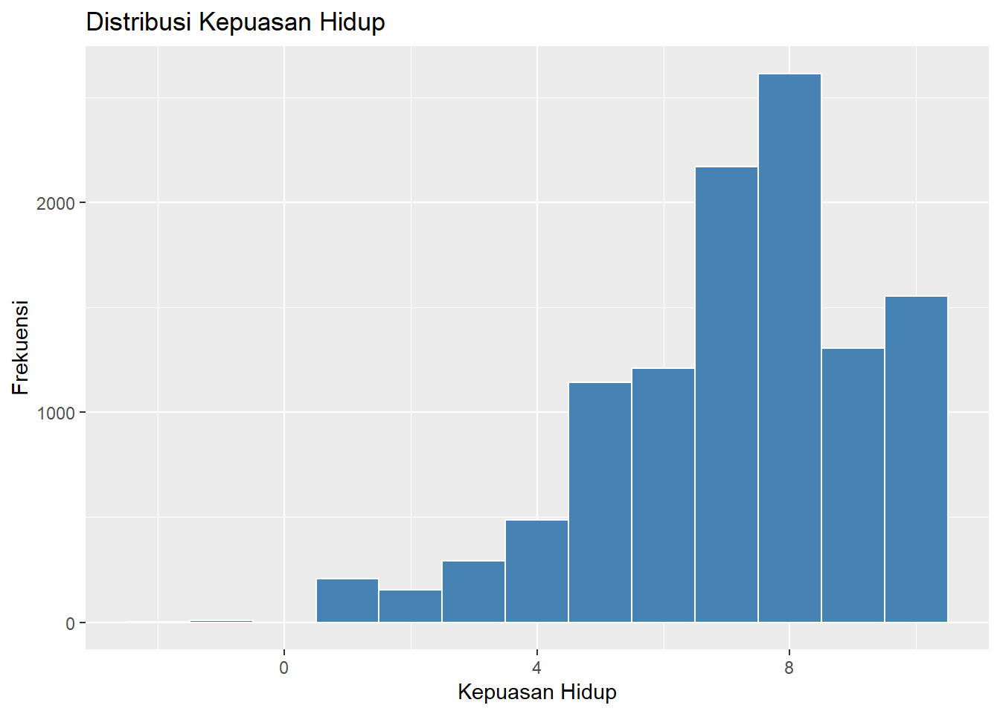
Boxplot per Negara
ggplot(wvs_cleaned, aes(x = negara, y = kepuasan_hidup, fill = negara)) +
geom_boxplot() +
labs(title = "Kepuasan Hidup per Negara", x = "Negara", y = "Kepuasan Hidup") +
theme(legend.position = "none")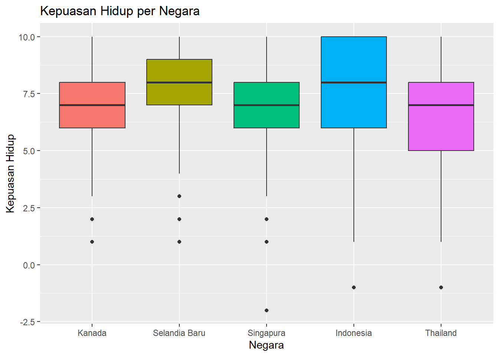
Bar Chart
ggplot(wvs_cleaned, aes(x = negara, fill = negara)) +
geom_bar() +
labs(title = "Jumlah Responden per Negara", x = "Negara", y = "Jumlah") +
theme_minimal() +
theme(legend.position = "none")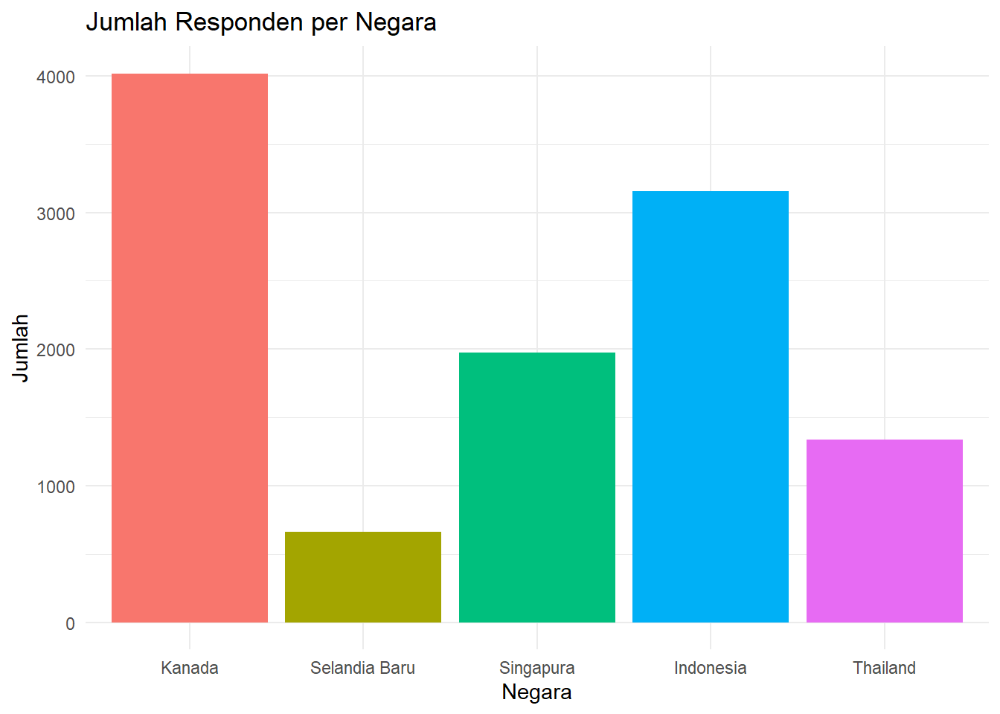
Pie Chart
proporsi_negara <- wvs_cleaned |>
count(negara) |>
mutate(persen = n / sum(n) * 100)
ggplot(proporsi_negara, aes(x = "", y = persen, fill = negara)) +
geom_col(width = 1) +
coord_polar(theta = "y") +
labs(title = "Proporsi Responden per Negara") +
theme_void()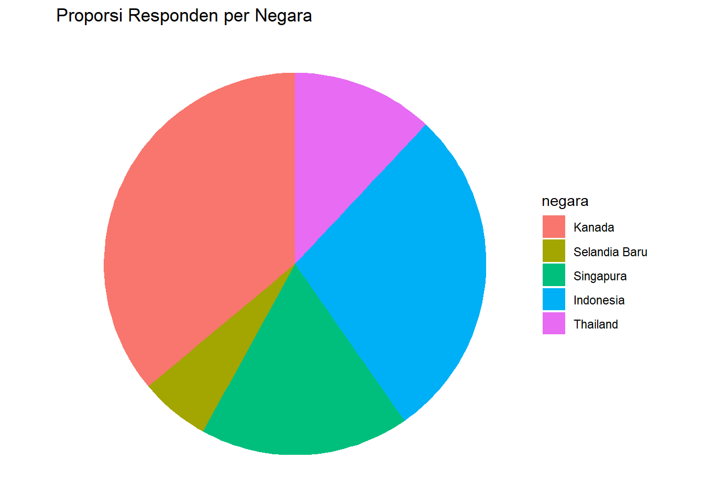
Scatter Plot
ggplot(wvs_cleaned, aes(x = kebebasan_memilih, y = kepuasan_hidup)) +
geom_jitter(alpha = 0.1, width = 0.3, height = 0.3) +
geom_smooth(method = "lm", color = "red") +
labs(title = "Kebebasan Memilih vs Kepuasan Hidup",
x = "Kebebasan Memilih", y = "Kepuasan Hidup")`geom_smooth()` using formula = 'y ~ x'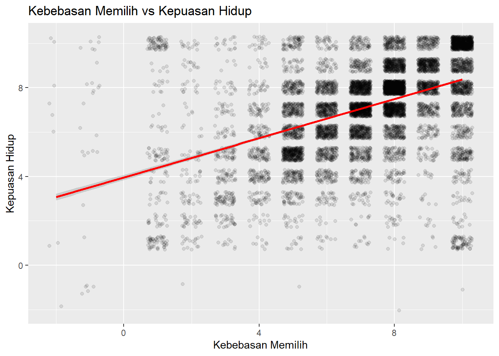
Tabulasi Silang
wvs_cleaned |>
count(negara, kelompok_usia) |>
pivot_wider(names_from = negara, values_from = n)# A tibble: 4 × 6
kelompok_usia Kanada `Selandia Baru` Singapura Indonesia Thailand
<chr> <int> <int> <int> <int> <int>
1 18-28 712 27 299 691 161
2 29-44 1232 119 573 1341 427
3 45-60 1061 222 605 862 565
4 61+ 1013 292 495 262 183Stacked & Grouped Bar Chart
ggplot(wvs_cleaned, aes(x = negara, fill = kelompok_usia)) +
geom_bar() +
labs(title = "Distribusi Kelompok Usia per Negara",
x = "Negara", y = "Jumlah", fill = "Kelompok Usia") +
theme_minimal()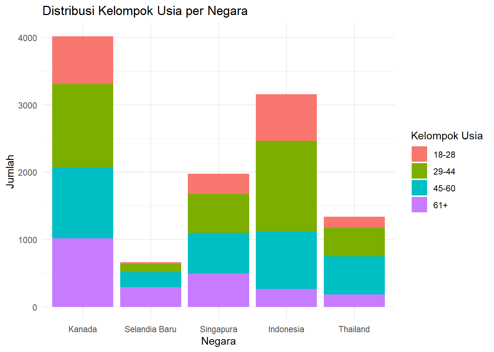
Proportional Bar Chart
ggplot(wvs_cleaned, aes(x = negara, fill = kelompok_usia)) +
geom_bar(position = "fill") +
labs(title = "Proporsi Kelompok Usia per Negara",
x = "Negara", y = "Proporsi", fill = "Kelompok Usia") +
theme_minimal() +
scale_y_continuous(labels = scales::percent)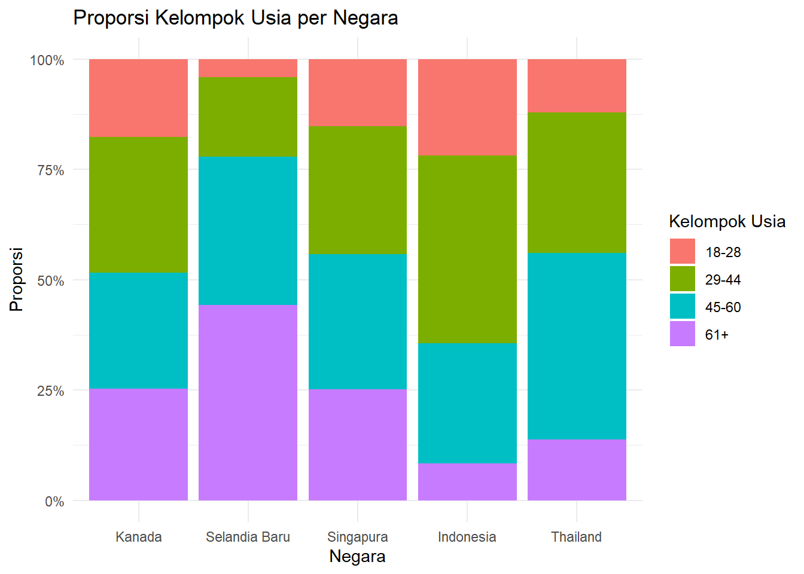
Korelasi
cor(wvs_cleaned$kepuasan_finansial, wvs_cleaned$kepuasan_hidup)[1] 0.5705897Matriks Korelasi
library(corrplot)corrplot 0.95 loadedwvs_cleaned |>
select(kepuasan_hidup, kepuasan_finansial, religiusitas,
kebebasan_memilih, usia) |>
cor(use = "complete.obs") |>
corrplot(method = "color", type = "upper",
addCoef.col = "black", number.cex = 0.8,
tl.col = "black", tl.cex = 0.8)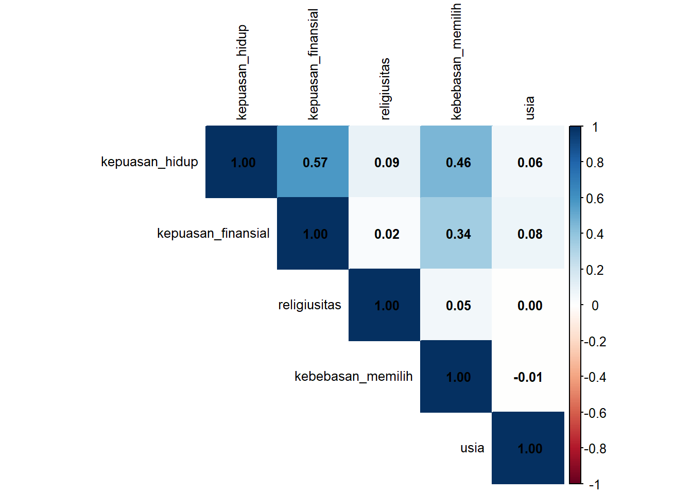
Faceting
ggplot(wvs_cleaned, aes(x = kepuasan_finansial, y = kepuasan_hidup)) +
geom_jitter(alpha = 0.2, width = 0.3, height = 0.3) +
geom_smooth(method = "lm", color = "red") +
facet_wrap(~ negara) +
labs(title = "Kepuasan Finansial vs Kepuasan Hidup per Negara",
x = "Kepuasan Finansial", y = "Kepuasan Hidup") +
theme_minimal()`geom_smooth()` using formula = 'y ~ x'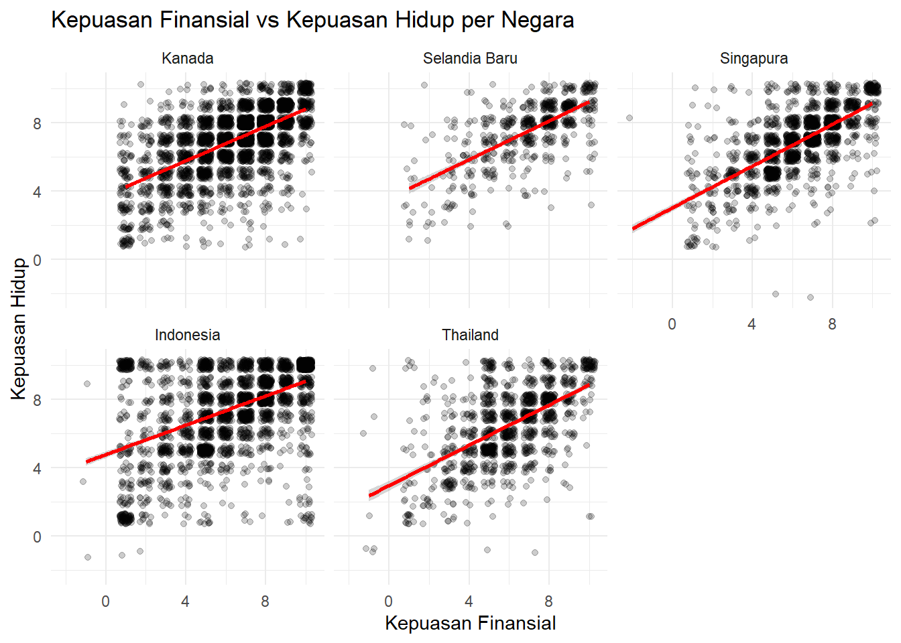
Latihan 1
Buat boxplot
kepuasan_finansialperjenis_kelamin.
Jawaban
ggplot(wvs_cleaned, aes(x = jenis_kelamin, y = kepuasan_finansial,
fill = jenis_kelamin)) +
geom_boxplot() +
labs(title = "Kepuasan Finansial per Jenis Kelamin",
x = "Jenis Kelamin", y = "Kepuasan Finansial") +
theme_minimal() +
theme(legend.position = "none")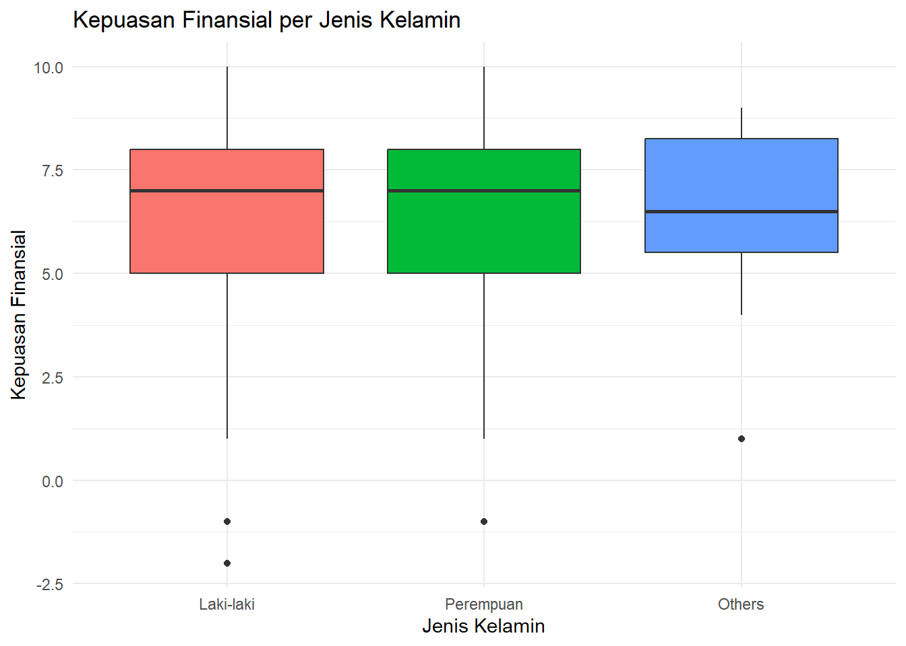
Latihan 2
Hitung rata-rata
kebebasan_memilihpernegaradanjenis_kelamin.
Jawaban
wvs_cleaned |>
summarize(
rata_kebebasan = mean(kebebasan_memilih, na.rm = TRUE),
n = n(),
.by = c(negara, jenis_kelamin)
)# A tibble: 11 × 4
negara jenis_kelamin rata_kebebasan n
<fct> <fct> <dbl> <int>
1 Kanada Laki-laki 7.41 2059
2 Selandia Baru Perempuan 7.74 354
3 Singapura Perempuan 6.86 1059
4 Singapura Laki-laki 6.75 913
5 Kanada Perempuan 7.45 1959
6 Selandia Baru Laki-laki 7.74 306
7 Indonesia Laki-laki 7.66 1431
8 Indonesia Perempuan 7.60 1725
9 Thailand Perempuan 6.16 690
10 Thailand Laki-laki 5.96 638
11 Thailand Others 5.5 8Latihan 3
Buat boxplot
kepuasan_finansialperjenis_kelamin, dengan facet pernegara.
Jawaban
ggplot(wvs_cleaned, aes(x = jenis_kelamin, y = kepuasan_finansial,
fill = jenis_kelamin)) +
geom_boxplot() +
facet_wrap(~ negara) +
labs(title = "Kepuasan Finansial per Jenis Kelamin dan Negara",
x = "Jenis Kelamin", y = "Kepuasan Finansial") +
theme_minimal() +
theme(legend.position = "none")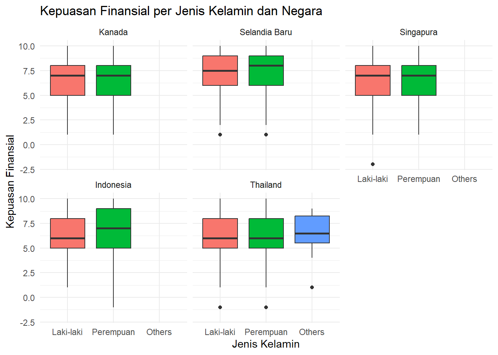
Ringkasan Sesi 1
Apa yang Sudah Kita Pelajari
- Dasar R: objek, tipe data, vektor, faktor, dataframe
- Tidyverse:
select(),filter(),mutate(),case_when(),summarize(),pivot_wider(), pipe|> - Visualisasi: histogram, boxplot, bar chart, pie chart, scatter plot, faceting, korelasi
- Statistik Deskriptif: mean, median, mode, sd, var, range, IQR
Sesi Berikutnya
Sesi 2: Analisis Regresi
- Regresi linear sederhana dan berganda
- Diagnostik dan asumsi
- Variabel kategorikal dan interaksi
Akhir Sesi 1!
Terima kasih! Sampai jumpa di sesi berikutnya.